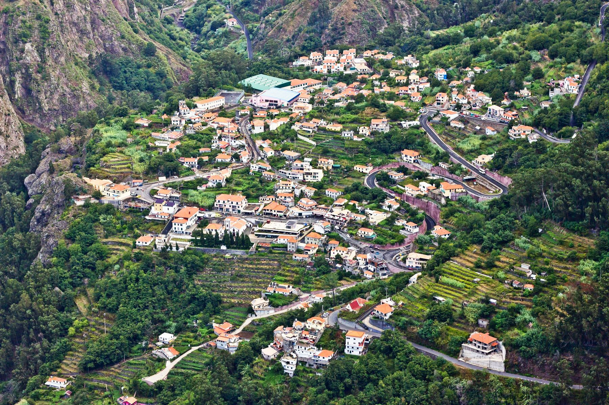
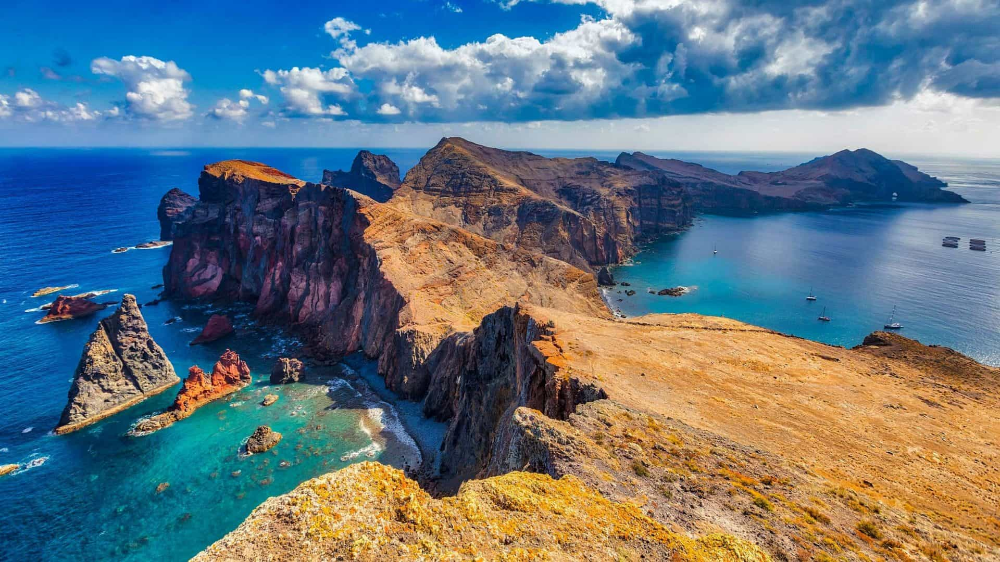
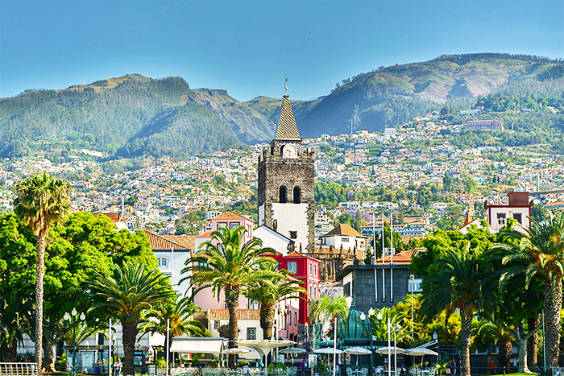
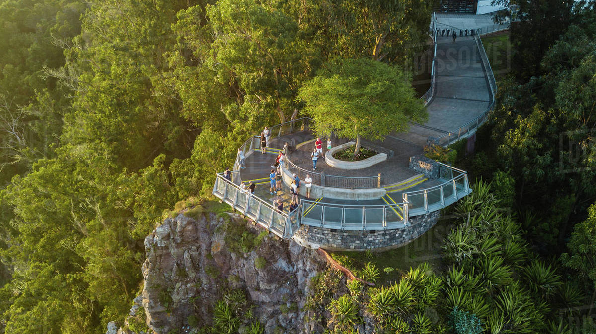
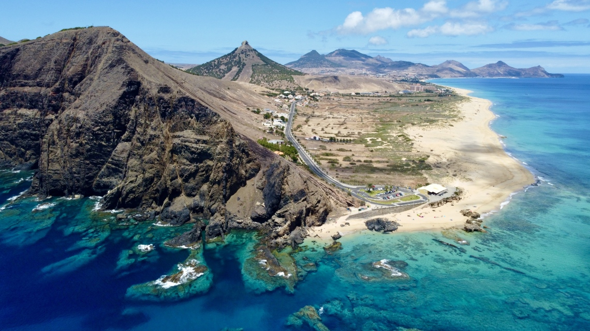
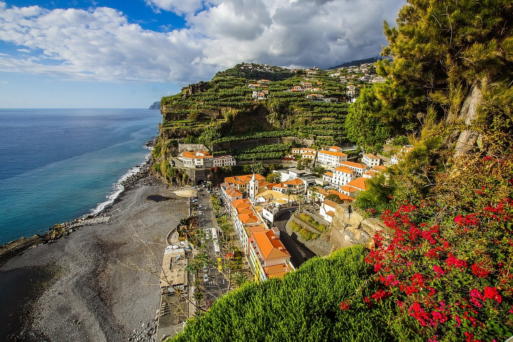
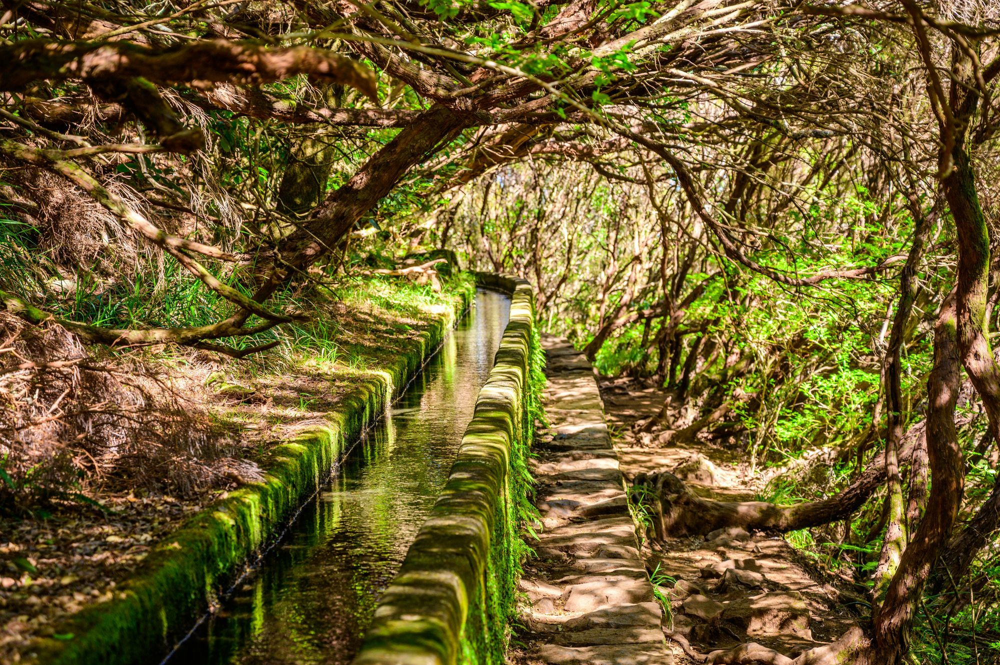

По прилету на Мадейру нас ждет приветственный бокал
знаменитого сладкого португальского вина и комфортабельный
отель, где мы хорошенько отдохнем перед началом путешествия.
Размещение в отеле в Фуншале.
Мадейра - остров вечной весны
26/02/2022 - 05/03/2022
(8 дней)
Особенности маршрута
1 день: Прибытие на остров. Ночлег в Фуншале

2 день: Пику душ Барселуш и Эйра ду Серраду. Деревня монахинь Куррал. Вершина Пику ду Ариейру. Катание на плетёных санях табаганах.
Статуя Иисуса.
Завтрак. Начинаем знакомство с островом со смотровой
площадки на Пику душ Барселуш, откуда открываются
прекрасные панорамные виды на Фуншал.
Далее, по живописному горному серпантину, мы направляемся в деревню Куррал (известная по легендам о бежавших от пиратов монахинях). Считается, что именно здесь был расположен кратер вулкана. Дегустация джинжей и выпечки с каштанами.
После наш путь лежит на площадку Эйра ду Серраду, откуда виднеются самые высокие пики острова. Через эвкалиптовые, еловые...

Далее, по живописному горному серпантину, мы направляемся в деревню Куррал (известная по легендам о бежавших от пиратов монахинях). Считается, что именно здесь был расположен кратер вулкана. Дегустация джинжей и выпечки с каштанами.
После наш путь лежит на площадку Эйра ду Серраду, откуда виднеются самые высокие пики острова. Через эвкалиптовые, еловые...
3 день: Дельфины, киты. Мыс святого Лаврентия. Красочные домики Сантаны. Пляж Машику.

Завтрак. Выселение из отеля.
Сегодня нас ждёт просто потрясающий день. Сперва мы едем к мысу святого Лаврентия, чтобы сесть на специальные скоростные лодки и отправится в открытый океан в поисках китов и дельфинов.
После этого мы причалим к берегу и пообедаем в очень колоритном и необычном месте на полуострове.
Далее совершим небольшой, но фантастически красивый трек обратно к континенту. После наш путь лежит к деревне Машику, где мы отдохнём на песчаном пляже.
Далее наш путь лежит...
Сегодня нас ждёт просто потрясающий день. Сперва мы едем к мысу святого Лаврентия, чтобы сесть на специальные скоростные лодки и отправится в открытый океан в поисках китов и дельфинов.
После этого мы причалим к берегу и пообедаем в очень колоритном и необычном месте на полуострове.
Далее совершим небольшой, но фантастически красивый трек обратно к континенту. После наш путь лежит к деревне Машику, где мы отдохнём на песчаном пляже.
Далее наш путь лежит...
4 день: Тропический парк. Экскурсия по Фуншалу. Дегустация вин и портвейнов в погребах Фуншала.
Завтрак.
Сперва отправляемся в Тропический парк дворца Монте, один из самых красивых во всей Европе — на который нас доставит уютная кабинка канатной дороги. Возвращение в центр.
Прогулка по городу.
Возвращение в Фуншал. Ночлег.

Сперва отправляемся в Тропический парк дворца Монте, один из самых красивых во всей Европе — на который нас доставит уютная кабинка канатной дороги. Возвращение в центр.
Прогулка по городу.
Возвращение в Фуншал. Ночлег.
5 день: Деревня Черчиля Камара де Лобуш. Мыс Кабу Жирау. Винодельня. Лавовые бассейны в Порту Муниж. Ночлег в Фуншале.

Первый пункт нашего маршрута на сегодня – окруженный банановыми
плантациями солнечный рыбацкий поселок Камара де Лобуш.
Здесь ловят самый известный местный деликатес – рыбу-саблю,
здесь собирают лапишы и сушат треску.
Как известно, именно в этом месте, наблюдая за возвращением рыбаков с промысла, любил рисовать свои пейзажи Уинстон Черчилль. Далее мы посетим мыс Кабу Жирау. Его смотровая площадка со стеклянным дном расположена прямо над океаном.
В обеденное время мы отправимся на винодельню,...
Как известно, именно в этом месте, наблюдая за возвращением рыбаков с промысла, любил рисовать свои пейзажи Уинстон Черчилль. Далее мы посетим мыс Кабу Жирау. Его смотровая площадка со стеклянным дном расположена прямо над океаном.
В обеденное время мы отправимся на винодельню,...
6 день: Свободный день в Фуншале. Факультативно: Золотые пляжи острова Порту-Санту. Ночлег в Фуншале.
Что может быть приятнее после насыщенных дней экскурсий,
чем провести целый день на пляже?
Для этого мы плывем на небольшой остров Порту-Санту в 40 км от Мадейры.
Он славится своим замечательным 9-километровым пляжем — а еще атмосферой уединения и спокойствия, которых так хочется на отдыхе.
Плыть будем 2,5 часа — на современном пароме, где есть бары, ресторан, игровая комната, солярий и даже кинотеатр!
Возвращение в Фуншал. Ночлег в Фуншале. ...

Для этого мы плывем на небольшой остров Порту-Санту в 40 км от Мадейры.
Он славится своим замечательным 9-километровым пляжем — а еще атмосферой уединения и спокойствия, которых так хочется на отдыхе.
Плыть будем 2,5 часа — на современном пароме, где есть бары, ресторан, игровая комната, солярий и даже кинотеатр!
Возвращение в Фуншал. Ночлег в Фуншале. ...
7 день: Свободный день в Фуншале. Факультативно - Провинциальная Мадейра (Юго-Запад острова). Ночлег в Фуншале.

Завтрак. Сегодня постигаем вкус неспешной островной жизни
на юго-западном побережье. Сонные деревушки и
сельскохозяйственные террасы, безбрежная даль
океана и уютные бухты — обязательно нужно прочувствовать,
как живут здесь местные.
После этого нас ждет уютный курортный городок Понта-ду-Сол в лучших традициях европейского пляжного отдыха, откуда мы начнем подъем на плато Поль да Сера — красивейшую равнину на высоте 1500 метров.
Наш путь лежит на самое западное побережье острова, мыс Парго....
После этого нас ждет уютный курортный городок Понта-ду-Сол в лучших традициях европейского пляжного отдыха, откуда мы начнем подъем на плато Поль да Сера — красивейшую равнину на высоте 1500 метров.
Наш путь лежит на самое западное побережье острова, мыс Парго....
8 день: Свободный день в Фуншале. Факультативно: хайкинг вдоль Левады. Пикник в горах с мастер классом по понче. Вылет домой
Завтрак. Сегодня Вы можете провести свободный день
в Фуншале или отправиться на пешую горную прогулку (хайкинг)
вдоль левады. Кропотливым трудом островитян были в прошлом
и позапрошлом веках были созданы так называемые левады.
Это вымощенная камнем канава, по которой чистейшая горная вода спускается вниз, к городам. Когда на острове стал развиваться туризм, прибывшие сюда туристы, облюбовали левады в первую очередь, так как нет ничего приятнее, чем прогуляется вдоль целых туннелей из вечнозеленых...

Это вымощенная камнем канава, по которой чистейшая горная вода спускается вниз, к городам. Когда на острове стал развиваться туризм, прибывшие сюда туристы, облюбовали левады в первую очередь, так как нет ничего приятнее, чем прогуляется вдоль целых туннелей из вечнозеленых...
Турлидер